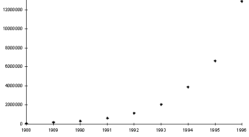

2.4. Что дальше?
В последние годы борьба за мировое лидерство
все заметнее смещается в область
телекоммуникаций. По уровню информационной
насыщенности экономической и общественной жизни
впереди идут США. Этому способствуют мощь
экономики, ее мобильность, постоянные
инвестиции, приток в эту сферу деятельности
ученых и бизнесменов. Кроме того, большую роль
играет собственно американское государство,
которое субсидирует многие приоритетные
направления науки и промышленности.

Рис. 2.4. Экспоненциальный рост числа хостов в сети Internet.
Информатика и телекоммуникации позволяют не
только кардинально преобразовывать экономику,
но и, по взглядам американских специалистов,
обеспечить экономико-финансовое и даже
военно-стратегическое превосходство.
Свидетельством такого отношения США к
информатике и телекоммуникациям служит
подписанный 8 февраля 1996 года президентом
Б. Клинтоном Закон о телекоммуникациях. В
своей речи на церемонии подписания Клинтон
сказал: "Сейчас информационная революция
вновь переделывает наш мир, изменяя привычные
методы работы, уклад жизни и даже наше отношение
друг к другу" . Закон, в частности,
предусматривает подключение к 2000 году всех
американских школ, библиотек и больниц к Internet.
До середины 80-х годов Западная Европа шла
вровень с США в области телекоммуникаций. В 1984
году были начаты различные долгосрочные проекты,
в том числе и в области телекоммуникаций.
Например, программа ESPRIT предназначена для
создания европейского "информационного
общества" ; часть этой программы посвящена
исследованиям в области программного
обеспечения и технологий мультимедиа. Програм-мы
STAR, RACE и ACTS имеют связную направленность. Их цель
заключается в создании паневропейской
широкополосной сети общего доступа.
Последние годы в Японии наблюдается настоящий
бум компьютерных сетей. В начале 1995 года при
кабинете министров был учрежден "Центр
содействия построению информационного
общества" , который выполняет задачу выхода на
первое место в мире по мультимедиа. Ведутся
разработки новых технологий для "Японской
информационной супермагистрали" .
В настоящее время около 60% пользователей Internet
живет в США, 21% в Европе и 6% - в Японии. Численность
подсоединенных к Internet хостов [3] растет по
экспоненциальному закону, что иллюстрируется
рис. 2.4.
Увеличивается число серверов, используемых не
только для предоставления информации и рекламы,
но и для осуществления торговых и финансовых
операций. Разрабатываются и внедряются
различные устройства мультимедиа, которые
функционируют в Internet. В различных странах
создаются свои "суперсети" для подключения
к Сети сетей. Экономический форум ведущих стран в
феврале 1997 года в Давосе проходил под девизом:
"Создание сетевого общества в эпоху Internet" .
В 1994 году рынок телекоммуникаций в США составил
порядка 15 миллиардов долларов, в том числе
(в миллиардах долларов): службы частных каналов -
9; оборудование локальных сетей и
маршрутизаторов - 3; службы глобальных сетей - 1;
службы электронных сообщений и новостей - 1;
программное обеспечение и аппаратура - 1.
С середины 80-х годов внимание коммерческих
кругов стал привлекать Internet как возможность
устойчивого бизнеса на производстве
оборудования для применения сети. NYSERNET (the New York
State regional network) первой основала компанию Performance Systems
International, которая и поныне является одним из
наиболее удачливых провайдеров служб Internet. К
наиболее сильным провайдерам относятся ALTERNET
(возник-ший из UUNET), CERFNet (инициированная General Atomic в
1989 году), NEARNET (начавшая функционировать в
Бостоне, а затем влившаяся в группу компаний
предоставления служб BBN Planet, образовавшейся,
кстати, из фирмы BBN - родоначальника IMP для Internet).
Одной из главных причин экспоненциального
роста Internet явилось появление и развитие все
новых услуг и возможностей для пользователей
сети, особенно введение звука и
видеоизображений, индексирования и различных
поисковых служб. Многие из этих служб зародились
в результате исследований университетов и
научных центров. Примером могут служить Altavista,
Lycos, Yahoo и Infoseek. Эти службы стимулировались
появлением World Wide Web.
Разработанный в CERN, WWW был впервые опробован в
1989 году. В 1992 году он привлек внимание
программистов из NCSA (National Centre for Supercompyting Applications) в
университете Иллинойса. Эта команда разработала
графический броузер для WWW, который получил
название Mosaic. По согласованию с NCSA это
программное обеспечение распространялось по
Internet бесплатно. Возможность оформления
многошрифтового гипертекста, включения цветной
графики, звука и видеоизображений привело к
громадному росту серверов WWW, число которых на
май 1995 года составило около 30 000. Компании стали
широко использовать Web как средство предложения
своих продуктов и служб.
Винтон Кирф в своей статье [5] писал:
"Рискованно предсказывать будущее чего-либо
столь же динамичного, как Internet" . В этой статье
он отметил основные направления развития Internet:
- продолжение расширения новых служб;
- появление новых услуг по пакетному видео,
видеоконференциям, передаче голоса (пакетному
телефону);
- предложение средств обеспечения безопасности
выполнения операций в Internet;
- увеличение связи Internet с бизнесом.
Internet, по словам Кирфа, действительно является
глобальной инфраструктурой для 21 столетия и, в то
же время, является одним из наиболее мощных
факторов свободы. Для нас подтверждением этого
может служить факт передачи новостей во время
путча 1991 года. Только благодаря Internet мир знал о
происходящих событиях, и благодаря Internet эти
новости доходили до нас.
|